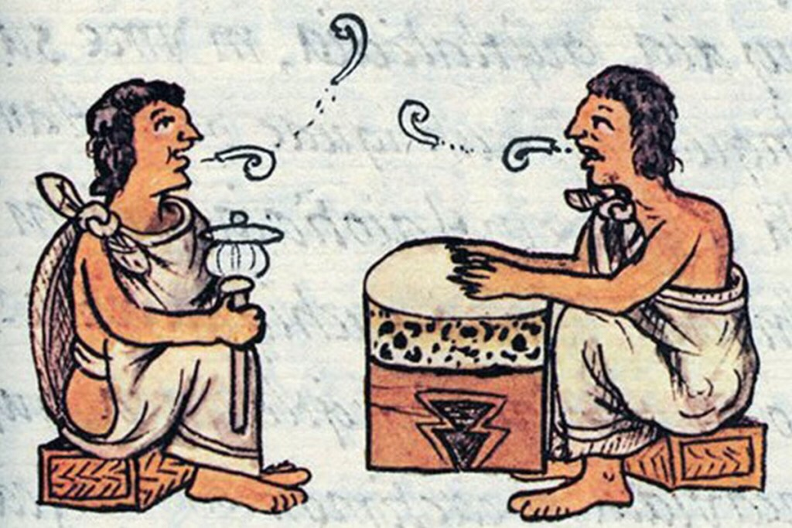

México se distingue por su gran diversidad lingüística, reconocida como una de las más grandes del mundo. Cuenta con 68 lenguas indígenas, pertenecientes a 11 familias lingüísticas, además de variantes lingüísticas, para un total de 364.
Historia: La diversidad lingüística de México tiene raíces profundas en la época prehispánica, donde diversos pueblos desarrollaron sus propias lenguas y culturas. Con la llegada de los españoles, se produjo un proceso de contacto lingüístico y cultural,
que resultó en la influencia del español en las lenguas indígenas y viceversa.
Riqueza: La diversidad lingüística en México no solo refleja la historia y la cultura de los pueblos indígenas, sino que también es un tesoro de conocimientos, tradiciones y formas de vida. Las lenguas indígenas son portadoras de saberes ancestrales sobre
la naturaleza, la medicina, la agricultura y otros aspectos de la vida cotidiana.
Desafíos: A pesar de su importancia, muchas lenguas indígenas en México enfrentan el riesgo de extinción debido a factores como la migración a las ciudades, la discriminación y la pérdida de la transmisión intergeneracional. Es crucial promover el uso y la
preservación de las lenguas indígenas para garantizar su supervivencia y la riqueza cultural de México.
Ejemplos: Algunas de las lenguas indígenas más habladas en México son el náhuatl, maya, tseltal, mixteco, tsotsil, zapoteco, otomí, totonaco, chol y mazateco. En la Ciudad de México, se hablan 55 de las 68 lenguas indígenas nacionales.
Conclusión: La diversidad lingüística de México es un patrimonio cultural invaluable que merece ser reconocido, valorado y salvaguardado para las generaciones presentes y futuras. La preservación de las lenguas indígenas contribuye a la construcción de
una sociedad más diversa, inclusiva y justa.
